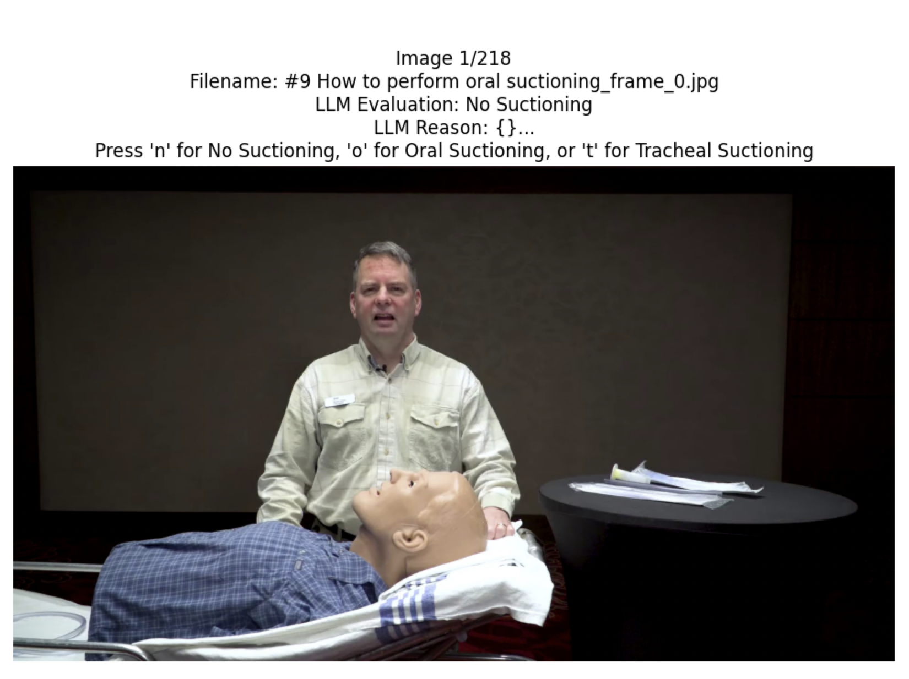
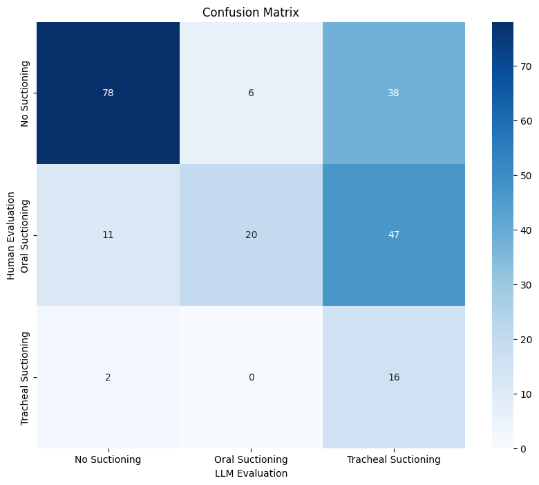

This analysis evaluates the performance of LLaMA 3.2 Vision model in detecting patient turning assistance across 320 medical images. The model achieved 71.25% accuracy, demonstrating strong potential while highlighting areas for improvement.
The frame extraction process is implemented using OpenCV (cv2) with the following specifications:
Applies consistent naming convention: {video_name}_frame_{frame_number}.jpg
Statistics:
For detailed implementation, see:
python:split2frames.py
def extract_frames_from_videos(video_dir, output_dir, frequency=3):
LLaMA 3.2 Vision Model Integration ```python:llama32_detect.py def img2text(input_path, output_file = None, exportedfile_indexing = False, show_img = False, max_new_tokens = 1000): device = torch.device("cuda" if torch.cuda.is_available() else "cpu")
model_id = "meta-llama/Llama-3.2-11B-Vision-Instruct" model = MllamaForConditionalGeneration.from_pretrained( model_id, torch_dtype=torch.bfloat16,
)
model = model.to(device) processor = AutoProcessor.from_pretrained(model_id)
dir = [input_path] if os.path.isdir(input_path): dir = os.listdir(input_path)
data = [] result = {} for i, image_path in enumerate(sorted(dir)): # Read the image if os.path.isdir(input_path): image = Image.open(Path(input_path).joinpath(image_path)) else: image = Image.open(image_path)
# Describe the image
input_text = processor.apply_chat_template(msgs("Describe the image in detail."), add_generation_prompt=True)
inputs = processor(
image,
input_text,
add_special_tokens=False,
return_tensors="pt"
).to(model.device)
res = model.generate(**inputs, max_new_tokens=max_new_tokens)
res = processor.decode(res[0]).split("<|end_header_id|>")[-1].replace('\n', ' ')
# Show the steps based on the image
prompt = "The picture is about the following:\n" +res +'\n' + prompt_orig
input_text = processor.apply_chat_template(msgs(prompt), add_generation_prompt=True)
inputs = processor(
image,
input_text,
add_special_tokens=False,
return_tensors="pt"
).to(model.device)
res = model.generate(**inputs, max_new_tokens=max_new_tokens)
res = processor.decode(res[0])
print('\n', i, image_path)
#print(generated_text,'\n')
print('Full Response\n', res)
reason = res.split("<|end_header_id|>")[-1]
print("Reason:", reason.replace('\n', ' '))
# Conclude
input_text = processor.apply_chat_template(msgs(reason+ "\nTask: Determine if a patient is being turned by someone else. Your answer should be either 'Yes' or 'No'."), add_generation_prompt=True)
inputs = processor(
image,
input_text,
add_special_tokens=False,
return_tensors="pt"
).to(model.device)
res = model.generate(**inputs, max_new_tokens=max_new_tokens)
res = processor.decode(res[0])
res = "False" if "No" in res.split("<|end_header_id|>")[-1] else "True" # We want to have a higher Recall rate, so rather than finding Yes, we want to find No.
print("Cut:", res)
reason = reason.replace('\n', ' ')
data.append([image_path, res, reason])
result[image_path] = (res, reason)
if show_img:
display(HTML(f'<img src="{Path(input_path).joinpath(image_path) if os.path.isdir(input_path) else image_path }" style="width:30%;">'))
data.sort()
if output_file is not None: data_frame = pd.DataFrame(data, columns=['Image', 'llm_evaluation', 'Reason']) data_frame.to_csv(output_file, sep = '\t', index = exportedfile_indexing, encoding = 'utf-8') return result ```

The human evaluation interface provides a simple way to assess images with the following features: - Displays current image with filename - Shows LLM's evaluation and reasoning - Keyboard controls: 't' for True, 'f' for False - Progress tracking and automatic result saving
Implementation details: ```python:human_evaluation.py class ImageEvaluator: def init(self): # Get list of images from frames directory self.image_files = sorted([f for f in os.listdir("frames") if f.endswith(('.png', '.jpg', '.jpeg'))]) self.current_index = 0 self.results = {}
# Load LLM evaluations
self.llm_df = pd.read_csv('llm_result.tsv', sep='\t')
self.llm_df.set_index('Image', inplace=True)
# Create figure
self.fig = plt.figure(figsize=(10, 10))
self.ax_img = plt.axes([0.1, 0.2, 0.8, 0.7])
# Connect keyboard event handler
self.fig.canvas.mpl_connect('key_press_event', self.on_key_press)
# Start evaluation
self.evaluate_images()
def evaluate_images(self):
plt.ion() # Turn on interactive mode
while self.current_index < len(self.image_files):
self.display_current_image()
plt.pause(0.001) # Small pause to allow GUI to update
# Wait for keyboard input
while self.current_index == len(self.results):
plt.pause(0.1)
# Check if we've processed all images
if self.current_index >= len(self.image_files):
plt.close('all')
self.save_results()
return # Exit the method after saving
# Save results if we exit the main loop
plt.close('all')
self.save_results()
def display_current_image(self):
current_image = self.image_files[self.current_index]
# Get LLM evaluation and reason if available
llm_eval = "Unknown"
reason = "No reason provided"
if current_image in self.llm_df.index:
llm_eval = self.llm_df.loc[current_image, 'llm_evaluation']
reason = self.llm_df.loc[current_image, 'Reason']
# Clear previous image
self.ax_img.clear()
# Load and display current image
image_path = os.path.join("frames", current_image)
img = Image.open(image_path)
self.ax_img.imshow(img)
self.ax_img.axis('off')
self.ax_img.set_title(f"Image {self.current_index + 1}/{len(self.image_files)}\n"
f"Filename: {current_image}\n"
f"LLM Evaluation: {llm_eval}\n"
f"LLM Reason: {reason[:300]}...\n"
f"Press 't' for True or 'f' for False") # Show first 300 chars of reason
plt.draw()
def on_key_press(self, event):
if event.key in ['t', 'f'] and self.current_index < len(self.image_files):
current_image = self.image_files[self.current_index]
self.results[current_image] = (event.key == 't')
self.current_index += 1
if self.current_index < len(self.image_files):
self.display_current_image()
plt.draw()
def save_results(self):
# Convert results to DataFrame and save as TSV
df = pd.DataFrame.from_dict(self.results, orient='index', columns=['human_evaluation'])
df.index.name = 'Image'
df = df.sort_index() # Sort by filename
df.to_csv('human_result.tsv', sep='\t')
print(f"\nResults saved to human_result.tsv")
```
| Class | Precision | Recall | F1-Score | Support | |-------|-----------|---------|-----------|----------| | False | 0.683 | 0.603 | 0.641 | 136 | | True | 0.730 | 0.793 | 0.760 | 184 |

Image: Assisting with Positioning a Patient in Bed - Ashraf Z Qotmosh (720p, h264, youtube)_frame_114.jpg
- Evaluation: Both human and LLM correctly identified turning assistance
- LLM Reasoning: The image depicts a woman in a blue scrub top assisting an elderly woman in a hospital bed. The woman in blue has dark skin and short, braided hair, and is kneeling beside the bed with her hands on ...
- Key Features: Active physical contact, proper positioning, clear movement intent
Image: Assisting with Positioning a Patient in Bed - Ashraf Z Qotmosh (720p, h264, youtube)_frame_147.jpg
- Evaluation: Both human and LLM correctly identified turning assistance
- LLM Reasoning: Analysis of the Image The image depicts a healthcare professional, likely a nurse, tending to a patient in a hospital room. The nurse is attired in blue scrubs with a green zipper and a white b...
- Key Features: Active physical contact, proper positioning, clear movement intent
Image: 24-hour-home-care---caregiver-training-turning-and-positioning-in-a-bed_frame_32.jpg
- Evaluation: Both human and LLM correctly identified non-turning scenario
- LLM Reasoning: The image depicts a man lying on his back, covered with a white sheet, on a bed with white pillows and a brown wooden headboard. A second man stands beside the bed, wearing a blue polo shirt and bla...
- Key Features: No physical contact for turning, different care activities
Image: Assisting with Positioning a Patient in Bed - Ashraf Z Qotmosh (720p, h264, youtube)_frame_6.jpg
- Evaluation: Both human and LLM correctly identified non-turning scenario
- LLM Reasoning: The image shows a healthcare professional, likely a nurse or doctor, standing in a hospital corridor, facing a wall-mounted dispenser. The woman has short, light-brown hair and wears blue scrubs wit...
- Key Features: No physical contact for turning, different care activities
Image: Assisting with Positioning a Patient in Bed - Ashraf Z Qotmosh (720p, h264, youtube)_frame_96.jpg
- Human Evaluation: False
- LLM Evaluation: True
- LLM Reasoning: Step 1: Identify the people present in the image. There is a patient visible, and there is at least one caregiver/assistant visible. Step 2: Determine the physical contact and assistance. ...
- Analysis of Disagreement: LLM possibly over-interpreted preparatory positioning
Image: 24-hour-home-care---caregiver-training-turning-and-positioning-in-a-bed_frame_2.jpg
- Human Evaluation: False
- LLM Evaluation: True
- LLM Reasoning: Analysis of the Image The image depicts a man standing in a hospital room, with a patient lying in bed. The caregiver is positioned near the patient's feet, with his hands clasped together in f...
- Analysis of Disagreement: LLM possibly over-interpreted preparatory positioning
Image: fundamentals-of-turning-and-cushion-placement-when-person-can-assist---1-how-to-turn_frame_2.jpg
- Human Evaluation: False
- LLM Evaluation: True
- LLM Reasoning: Analysis of the Image The image depicts a person lying on a bed, with a caregiver standing next to them. The caregiver is positioned in a way that suggests they are about to assist the patient ...
- Analysis of Disagreement: LLM possibly over-interpreted preparatory positioning
Add confidence scoring for predictions
Data Collection
python
model_id = 'meta-llama/Llama-3.2-11B-Vision-Instruct'
model = MllamaForConditionalGeneration.from_pretrained(
model_id,
torch_dtype=torch.bfloat16
)
The model uses a carefully crafted prompt with three key components:
Role Definition
You are a medical image analysis expert. Your task is to carefully analyze the image and determine if it shows a patient being assisted in turning by another person.
Example Cases ``` Example 1: Active Turning Image: A nurse standing next to a hospital bed with her hands on a patient's shoulder and hip, clearly in the process of rolling them from their back to their side. Analysis: True - This shows active turning assistance because:
Example 2: Non-Turning Care Image: A patient lying still in bed while a nurse stands nearby checking IV fluids. Analysis: False - This is not turning assistance because: - No physical contact for movement support - Patient position is static - Caregiver is performing different care tasks ```
Analysis Framework The model evaluates each image using four key aspects:
People Present
Relative positioning
Physical Contact & Assistance
Supportive stance
Patient Position & Movement
Intended direction
Level of Assistance
mermaid
graph TD
A[Input Image] --> B[Image Processing]
B --> C[LLaMA Vision Model]
C --> D[Structured Analysis]
D --> E[Binary Classification]
E --> F[Reasoning Output]
The model generates: 1. Detailed analysis of the image 2. Binary classification (True/False) 3. Supporting reasoning
Example output: ``` Analysis of the Image Upon examining the image, I notice...
Conclusion Based on [specific observations]...
Final Determination * True/False: [reasoning] ```